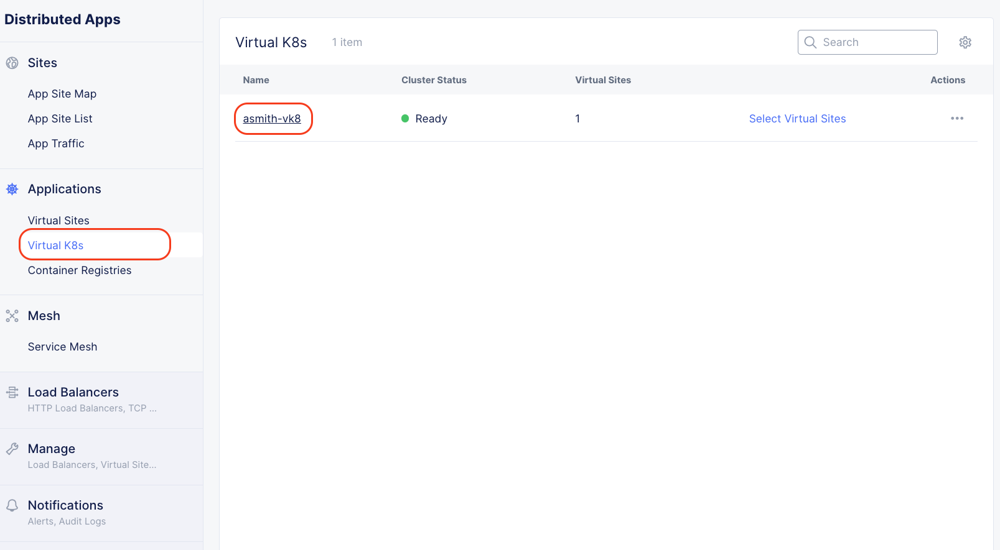

F5 Distributed Cloud > F5 Distributed Cloud - AppStack CaaS & K8s Delivery Options > Module 2: Deploy and Scale Virtual K8s Workload Source | Edit on
Lab 1 - Review vK8s Cluster and Deploy vK8s Workload¶
In this lab, we will learn the following:
- Review the previously-created Virtual K8s cluster
- Configure a vK8s workload utilizing a containerized app from a private registry
- Deploy a vK8s workload within a vK8s site
- Advertise a vK8s workload within a cluster via custom HTTP port
Core concepts
- Workload
- Workload is used to configure and deploy a workload in Virtual Kubernetes. A workload may be part of an application. Workload encapsulates all the operational characteristics of Kubernetes workload, storage, and network objects (deployments, statefulsets, jobs, persistent volume claims, configmaps, secrets, and services) configuration, as well as configuration related to where the workload is deployed and how it is advertised using L7 or L4 load balancers. A workload can be one of simple service, service, stateful service or job. Services are long running workloads like web servers, databases, etc. Jobs are “run to completion” workloads. Services and jobs can be deployed on Regional Edges or customer sites. Services can be exposed in-cluster, on the Internet by L7 or L4 load balancer, or on sites using an advertise policy.
- Service
- A service with one or more containers with configurable number of replicas that can be deployed on a selection of Regional Edge sites or customer sites and advertised within the cluster where is it deployed, on the Internet, or on other sites using TCP or HTTP or HTTPS load balancer.
- Deploy
- Since Kubernetes is becoming the de-facto industry standard for orchestrating applications, F5® Distributed Cloud has chosen to implement its control plane with a Kubernetes compatible API for orchestration while delivering additional capabilities of managing and securing multiple clusters across distributed locations. This makes it seamless to integrate with third party tools like Spinnaker for CI/CD, etc. For packaging of microservices, we prefer Docker images, which have become another de-facto approach.
For more core concepts, please review F5 Distributed Cloud documentation
Exercise 1 - Review Virtual K8s Site
Access Distributed Apps on the F5XC Console

Select Applications -> Virtual K8s, then your Virtual K8s cluster from the list
Review Sites on the vK8s dashboard - there should be 3. These 3 customer edge sites will be were our workloads will be deployed to.

{kind=link}
Exercise 2 - Configure vK8s Workload Container
Select Workloads -> Add vK8s workload

Complete the Metadata section by using your Firstname initial and Lastname altogether and append “-workload” at the end. Ex: For Andrew Smith, the site name will be “asmith-workload” (without the quotes!) Use this value for Name and Description, then select Service from the Select Type of Workload list.

Next, click the Configure link within the Service sub-section.
Select Add Item within the Containers section

Complete the Container Configuration section by providing a Name and details for which Image to Use
- Name: f5xcdemoapp
- Image Name: colemaneast.azurecr.io/f5xcdemoapp
- Container Registry: Private Registry
- Private Registry: shared/azure-registry

Click Apply
Exercise 3 - Configure vK8s Workload Deployment Options
Within the Deploy Options section, set Where to Deploy the Workload to Customer Virtual Sites, then click the Configure link within the Customer Virtual Sites section.

Select the agility-k8s-vsite vK8s site name from List of Customer Virtual Sites to Deploy, then Apply.

Exercise 4 - Configure vK8s Workload Advertisement Options
Within the Advertise Options section, set Options to Advertise the Workload to Advertise In Cluster, then click the Configure link within the Advertise in Cluster section

Within the Select Port to Advertise section, set Select Port to Advertise to 3000, set Application Protocol to HTTP. Finally click Apply. This will set the clusterIP port to 3000.
- Port: 3000
- Application Protocol: HTTP

With the vk8s workload configuration now completed, Click Apply again, then Save and Exit from the vK8s Workload configuration page


In less than a minute, you should see the workload added with 3 total sites and 3 total pods (you may need to click the “Refresh” button)